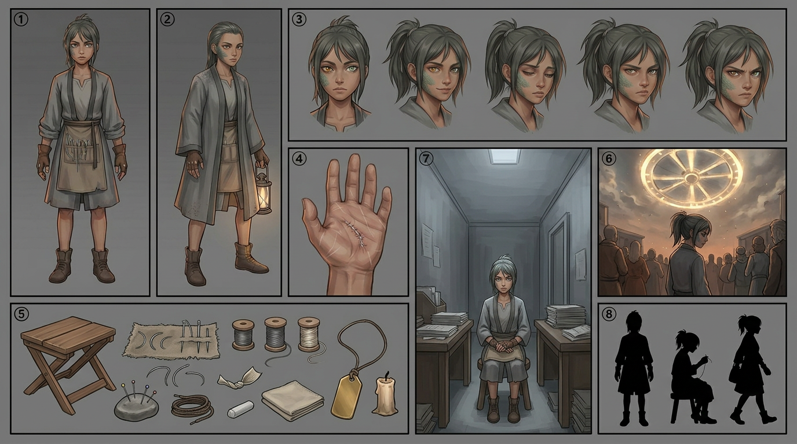

IRA SUTAR — model sheet
Chapter 001 · first appearance. The drawing reference for every page this character is on — the eight required panels — front · side · back · face · detail · hands · kit · action, in the house panel order, per the character art spec.

🔍 click to zoom
1front2side3back4face5detail (the stitched right palm)6hands (cut-finger gloves, needle and thread)7kit (needle-roll, thread, thimble, shears, chalk, purse, blank brass tag, candle)8action (mending at a doorstep by hand-lamp)
Alt sheet
Variants, expressions, staging and the silhouette test — the second page, used when a scene needs a state the model sheet does not carry.

🔍 click to zoom
Adefault stateBceremony-day stateCfive expressionsDmacro handsEsatchel tipped outFcrowd stagingGwaiting-room stagingHthree silhouettes
Drawing brief
- Eyes: mismatched — left amber, right grey-green. Draw both visible whenever possible.
- Face: a patch of fine grey-green scale along the left cheekbone, ending at the jaw. Not a tattoo.
- Hair: dark, ash-dulled, tied back badly with a strip of mending thread.
- Hands: the important feature. Thread-mender's leather gloves, fingertips cut off. Calloused index fingers. Fine white scars across both palms from her own needle slips.
- Clothes: grey ceremony robe, second-hand, hem too short. Under it, mender's working clothes — canvas apron with needle loops.
- Silhouette test: recognisable by the crooked ponytail + cut-finger gloves + sewing hunch.
Rule: Ira is drawn slightly less polished than everyone around her. She should look like she got dressed in a hurry, because she did.
Full written sheet, canon rules and card-game line: Ira Sutar